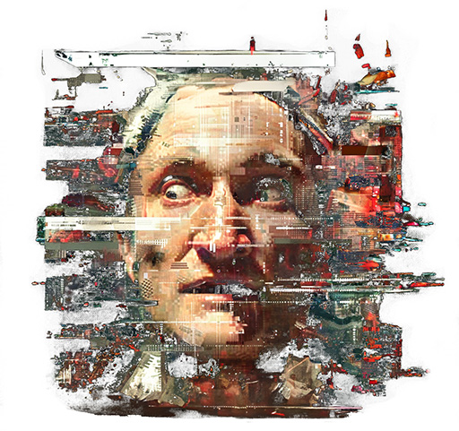
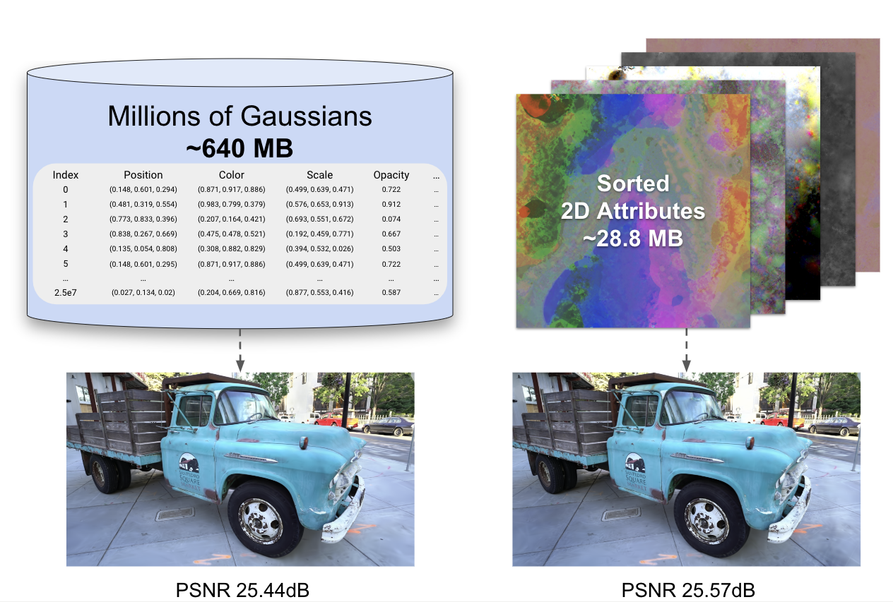

|
At 3dgs.zip, we're collecting resources around our work on 3D Gaussian Splatting in the Computer Vision & Graphics (CVG) research group at Fraunhofer Heinrich Hertz Institute (HHI).
|
 |
Compression Survey - survey.3dgs.zip
3dgs.zip: A survey on 3D Gaussian Splatting Compression MethodsWe're collecting results and info on methods that reduce the storage size of 3D Gaussian splatting scenes. Contributions welcome! |
survey.3dgs.zip
Code & Data |
Research
|  |
Compact 3D Scene Representation via Self-Organizing Gaussian GridsIn this paper, we introduce a compact scene representation organizing the parameters of 3D Gaussian Splatting (3DGS) into a 2D grid with local homogeneity, ensuring a drastic reduction in storage requirements without compromising visual quality during rendering. |
Paper Project Page Code |
CVPRW 2024: Gaussian Splatting Decoder for 3D-aware Generative Adversarial NetworksIn this work, we present a novel approach that combines the high rendering quality of NeRF-based 3D-aware Generative Adversarial Networks with the flexibility and computational advantages of 3DGS. By training a decoder that maps implicit NeRF representations to explicit 3D Gaussian Splatting attributes, we can integrate the representational diversity and quality of 3D GANs into the ecosystem of 3D Gaussian Splatting for the first time. |
Paper Project Page Code |
Viewer

|
Gaussian ViewerThis interactive viewer allows to display 3D Gaussian Splatting objects stored as .ply files or as compressed objects from Compact 3D Scene Representation via Self-Organizing Gaussian Grids. The viewer is fully written in python, which makes development and debugging very simple. |
GitHub |